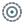

Placement and Time Reversal Parameters¶
These parameters set how the transducer is placed on the head, per placement mode, and the time-reversal refocusing and pose search.
On this page:
- Transducer Placement (
placement): placement mode, skin gap, reuse, and the per-mode keys. - Time Reversal (
time_reversal): the extra point-source run per target.
Transducer Placement (placement)¶
See Transducer Placement.
| Parameter | Description | Default | Comments |
|---|---|---|---|
mode |
Placement mode. | 'manual' |
'manual', 'localite',  'heuristic', 'mni', 'plantus', or 'tus_entry'. |
report |
Write the stand-alone placement report sub-XXX_placement_<mode>.html to io.dir_reports. |
true |
See placement report. |
export_formats |
Also write the placed poses for other tools, to io.dir_output. |
[] |
Any of 'brainsight', 'slicer', 'kplan'. See Exporting a pose. |
skin_gap_mm |
Gap between scalp and transducer exit plane along the beam axis [mm]. | 5 |
e.g. a gel pad. Used by heuristic, MNI, PlanTUS, and TUS_entry placement and by their time-reversal pose search; manual and Localite poses keep their own gap. The exit plane lies curv_radius_mm − dist_geom_ep_mm in front of the bowl apex. |
reuse |
When to reuse a recorded heuristic, PlanTUS, or TUS_entry run (placement_run.json in its run folder). |
'auto' |
'auto': reuse it when its settings match, else run again; 'always': require it (mismatch per io.cache_signature_check); 'never': always run. Independent of io.overwrite_files. See Starting from earlier stage outputs. |
Manual Placement (placement.manual)¶
See Manual placement.
| Parameter | Description | Default | Comments |
|---|---|---|---|
coordinate_space |
Space of transducer.trans_pos / focus_pos in mode='manual'. |
'voxel' |
'voxel' (1-based T1 voxels), 'ras' (subject RAS+ mm), 'mni' (MNI mm; both via charm's nonlinear warp, no scalp snapping). Converted per transducer in the placement stage, which must be enabled. |
Localite Placement (placement.localite)¶
| Parameter | Description | Default | Comments |
|---|---|---|---|
enabled |
Load transducer position from Localite neuronavigation files in head preprocessing? | 0 |
1 = yes, 0 = no. Older switch; placement.mode: 'localite' is the placement-stage equivalent. Both use neuronav_localite_pose. |
file |
Single Localite XML (TriggerMarkers, GUMMarkers, or InstrumentMarker; type detected). | '' |
File mode. Empty = automatic mode (ingested markers under path.localite_post). |
session |
Session of the automatic mode. | 1 |
Integer n → ses-0n, or 'ses-XX'. |
target |
Select the series by name. | '' |
Ingested target name (automatic mode) or entry description (file mode). Several transducers: one name per transducer, e.g. [L_M1, R_M1] (transducer i uses entry i); a single name applies to all. |
position |
Otherwise: index of the detected series (1-based, after the expected_segment_length filter). |
1 |
Automatic mode matches it against series_index in the JSON sidecar. Several transducers: one index per transducer, e.g. [1, 2]. |
markertype |
Deprecated, ignored. | 'TriggerMarkers' |
The marker type is detected from the files. |
loc_folder |
Folder between ses-XX/ and the Localite export. |
'loc' |
'' = the export sits directly under ses-XX/. |
session_folder_pattern |
Wildcard that a folder between loc_folder and the marker files must match. |
'*' |
e.g. 'Session_2024*'. |
expected_segment_length |
Pulses per TriggerMarkers series. | 80 |
Series off by more than 20 pulses are dropped; [] keeps all. |
voxel_size |
Voxel size for position_dev_vox in the series statistics [mm]. |
0.9 |
Does not affect positions. |
reference_distance_mm |
Fallback offset from the Localite matrix origin to the bowl rear centre, along the beam axis [mm]. | 15 |
Used only when tracker_to_bowl_mm is empty and the transducer has no scalar curv_radius_mm and dist_geom_ep_mm. Same sign convention as tracker_to_bowl_mm. |
tracker_to_bowl_mm |
Measured offset from the Localite matrix origin to the bowl rear centre [mm]. | [] |
Overrides geometry and reference_distance_mm. |
Neuronavigation Ingestion (neuronav)¶
See Localite ingestion; coil_map also feeds target resolution.
| Parameter | Description | Default | Comments |
|---|---|---|---|
coil_map |
Multi-coil ingestion: one entry per coil with .coil (index of TriggerMarkers_Coil<N>) and .target or .sequences(:).target. |
[] |
[] = single-coil ingestion (Coil0, GUMMarkers fallback). |
suggest_names |
Name series after the planned target nearest their beam axis. | true |
See naming. |
axis_tolerance_mm |
Max. distance of that target from the beam axis [mm]. | 10 |
|
target_depth_mm |
Accepted target depth along the beam axis [mm]. | [0, 150] |
Narrow around the focal distance to reject far matches. |
target_labels |
Label map: entries .target + .labels (patterns with */?, case-insensitive). |
[] |
[] = labels used as recorded; list them with neuronav_scan_sessions. |
batch_write |
Series written by neuronav_ingest_batch: 'all' tracked series or only 'named' ones. |
'all' |
Heuristic Placement (placement.heuristic)¶
See Heuristic Transducer Placement.
| Parameter | Description | Default | Comments |
|---|---|---|---|
save_localite_t1 |
Save Localite-aligned T1 output for header correction? | false |
See Heuristic Transducer Placement. |
dist_close |
Distance from target considered sufficiently close [mm]. | [] |
|
ear_radius |
Radius of the ear exclusion zone [mm]. | 35 |
|
left_ear_center |
Approximate coordinates for left ear [image voxels]. | [] |
Optional |
right_ear_center |
Approximate coordinates for right ear [image voxels]. | [] |
Optional |
criterion_intersection |
Max fraction of exit plane intersecting the skull. | 0.05 |
Reduces skull traversal. Expanded by expand_step up to 0.3 when no candidate meets it. |
criterion_skin_mean |
Mean distance of EP voxels from skin [quantile]. | [] |
Favours a short exit-plane distance to the skin. [] = off. |
criterion_skull_mean |
Mean distance of EP voxels from skull [quantile]. | [] |
Favours a short exit-plane distance to the skull. [] = off. |
criterion_skin_var |
Variance of EP voxel distance from skin [quantile]. | [] |
Favours an exit plane parallel to the skin (little curvature). [] = off. |
criterion_skull_var |
Variance of EP voxel distance from skull [quantile]. | [] |
Favours an exit plane parallel to the skull (irregular bone distorts the wavefront). [] = off. |
expand_step |
Expansion step for skin intersection criterion. | 0.01 |
1% |
candidate |
Candidate to place instead of the heuristic's choice. | [] |
idx in tpars_sub-XXX_<target>.csv of the last run; the criteria are not applied. Set by Place here on the Nexus Heuristic page. See position selection. |
MNI Placement (placement.mni)¶
| Parameter | Description | Default | Comments |
|---|---|---|---|
trans_pos_mm |
Desired transducer (scalp entry) position [MNI mm]. | [] |
Required for mode='mni'. Converted with charm's nonlinear warp, then snapped to the scalp. |
focus_pos_mm |
Focus / target position [MNI mm]. | [] |
Required for mode='mni'. Converted with the nonlinear (nonl) transform, like the heuristic target. |
PlanTUS Placement (placement.plantus)¶
See PlanTUS Placement.
Headless or interactive selection is set by interactive, which defaults to simulation.interactive.
| Parameter | Description | Default | Comments |
|---|---|---|---|
script_path |
PlanTUS installation directory (contains code/PlanTUS.py). |
'' |
Required. |
env_path |
SimNIBS installation or conda env whose Python runs PlanTUS. | '' |
'' = the Python of the SimNIBS install in startup.simnibs_bin_path. |
target_name |
Target label, used in output folder and file names. | '' |
Required. Outputs go to <path.placement>/sub-XXX/plantus/<target_name>/. |
mni_target_mm |
Target [MNI mm]. | [] |
Empty = use transducer.focus_pos (voxels). |
focal_distance_list |
Focal distances from the calibration [mm]. | [] |
Required. Set the eligible and optimal skin–target distance. |
flhm_list |
Focal length at half maximum per entry of focal_distance_list [mm]. |
[] |
Required. |
max_angle_deg |
Maximum transducer tilt [deg]. | 10 |
|
mask_radius_mm |
Radius of the spherical target mask [mm]. | 2 |
|
skin_smoothing_iterations |
Taubin smoothing passes on the skin surface before the criteria are computed. | 2 |
0 = raw SimNIBS surface. |
min_distance_mm |
Smallest eligible skin–target distance [mm]. | [] |
[] = min(focal_distance_list) − max(flhm_list). For a steerable array, set it and max_distance_mm to the steering range; the default margin otherwise admits spots the focus cannot reach. |
max_distance_mm |
Largest eligible skin–target distance [mm]. | [] |
[] = max(focal_distance_list) + max(flhm_list). |
optimal_distance_mm |
Optimum of the distance criterion [mm]. | [] |
[] = mean(focal_distance_list). |
weight_skin_target_distances |
Weight: deviation of skin–target distance from the optimal distance. | 0.2 |
The five weights should sum to 1. See composite scoring. |
weight_skin_target_angles |
Weight: angle between skin normal and direction to target. | 0.2 |
|
weight_skin_target_intersections |
Weight: beam path length inside the target (higher is better). | 0.2 |
|
weight_skin_skull_angles |
Weight: angle between skin and skull normals. | 0.2 |
|
weight_skull_thickness |
Weight: bone path length along the skin normal. | 0.2 |
From m2m_sub-XXX/final_tissues.nii.gz; ignored if that file is missing. See skull thickness. |
save_metrics |
Write per-vertex criteria, score, and selected vertex to plantus_metrics.mat. |
true |
Both modes. Used by the criteria evaluation and offline re-scoring. |
evaluate |
Evaluate the placement from plantus_metrics.mat (weight sweep, diagnostics, figures). |
true |
Both modes; needs save_metrics. Shown in the placement report. See criteria evaluation. |
interactive |
Choose the vertex in Connectome Workbench. | [] |
1 = interactive, 0 = headless, [] = follow simulation.interactive. 1 needs a display but not the MATLAB desktop; without a display PlanTUS runs headless. |
vertex |
Skin vertex (0-based) to place on the maps of an earlier run, without recomputing them. | [] |
Set by Place here on the Nexus PlanTUS page. [] = compute the maps and place the optimum (or the Workbench pick). Stops if the target moved since the maps were computed. See choosing the position. |
connectome_wb_path |
Connectome Workbench bin/ directory. |
'' |
Needed for interactive: 1 (wb_view), unless it is on PATH or in the env's bin/. |
TUS_entry Placement (placement.tus_entry)¶
See TUS_entry placement.
Not in config_default.yaml; the keys are listed in nexus/prestus_nexus/overlay.yaml.
| Parameter | Description | Default | Comments |
|---|---|---|---|
script_path |
Full path to TUS_entry.R. |
none | Required. |
env_path |
Conda environment containing Rscript. |
none | Required. |
scalp_mask |
Head or scalp mask in the T1 grid (nonzero = head). | SimNIBS final_tissues.nii.gz |
Filled into a solid head mask in the work directory. |
target_mask |
Binary NIfTI target mask. | (auto) | Empty: a sphere around focus_pos or mni_target_mm. |
target_mask_radius_mm |
Radius of the auto-generated target sphere [mm]. | 5 |
|
mni_target_mm |
Target [MNI mm]. | (from focus_pos) |
Converted to subject space with SimNIBS. |
exclu_mask |
Binary NIfTI exclusion zone (e.g. ventricles, vessels). | '' |
|
minimal_distance_cm |
Minimum scalp-to-target depth [cm]. | 4.24 |
|
maximal_distance_cm |
Maximum scalp-to-target depth [cm]. | 7.46 |
|
transducer_size_cm |
Transducer outer diameter [cm]. | 6.4 |
|
voxel_size_cm |
Voxel size [cm]. | (T1 voxel size) | Default: the mean T1 voxel size (the masks are on the T1 grid). TUS_entry assumes isotropic voxels. |
resolution_cm |
Spatial decimation step [cm]. | 0.33 |
|
return_candidates |
Save the ranked candidate list as RDS. | false |
|
target_name |
Label for output folder and file names. | 'target' |
|
work_dir |
Output directory override. | (auto) | Default <path.placement>/sub-XXX/tus_entry/<target_name>/. |
Time Reversal (time_reversal)¶
See Time reversal.
One extra k-Wave run per target (point source at the target), between the free-water baseline and the acoustic simulation.
| Parameter | Description | Default | Comments |
|---|---|---|---|
enabled |
Run the reverse simulation and write the refocusing / aberration report. | false |
Cartesian 2D/3D grids with the k-Wave source setup; not with acoustic_backend: babelbrain (use babelbrain.do_refocusing). |
apply_phases |
Use the time-reversal phases in the acoustic run. | false |
Matrix: per element; annular: per ring; ignored for a single element. ISPPA targeting keeps the drive amplitudes of the geometric drive. |
save_field |
Save the complex reverse field (sensor region) with the results. | false |
<dir_cache>/<prefix>_timereversal.mat. |
placement_search.enabled |
Score transducer poses around the planned one on the same reverse run. | false |
Curved annular transducers, 3D. Suggestions only: the acoustic run keeps the planned pose. |
placement_search.max_angle_deg |
Largest tilt of the beam direction from the planned one [deg]. | 20 |
Poses lie on an orbit around the target, against the scalp. |
placement_search.angle_step_deg |
Angular step of the candidate directions [deg]. | 2.5 |
|
placement_search.aim_iterations |
Re-aim at target − predicted shift this many times. | 2 |
0 = geometric aim only. |
placement_search.jitter_mm |
Also score the planned pose with its apex moved by these distances [mm], aimed at the target. | [] |
One or more, e.g. 0.5 (the local search users often run with forward simulations) or [0.5 1 2 5]. Rows of kind jitter, distance in column jitter_mm. |
placement_search.jitter_mode |
How jitter_mm moves the apex. |
'grid' |
'grid': ± along each grid axis, as when editing voxel coordinates (6 poses per distance; the bowl is not re-seated, so beyond ~1 mm it can cut into or lift off the scalp). 'scalp': slid over the scalp perpendicular to the planned beam in 8 directions and re-seated against the scalp (8 poses per distance). |
only |
Stop after the time-reversal stage. | false |
No water baseline, acoustic, or thermal simulation: the report and pose table only. |
pose_workflow.enabled |
Run the pose workflow (search → forward verification → final full-grid run) instead of a single simulation. | false |
One curved annular transducer, simulation.medium: layered. See Pose workflow. |
pose_workflow.n_top |
Number of best poses (by predicted target pressure after aim correction) to verify. | 5 |
The planned pose is always verified as the reference. |
pose_workflow.poses |
Pose ids of the pose table to verify as well. | [] |
|
pose_workflow.aim |
Aim of the verification runs. | 'corrected' |
'corrected' (aberration-corrected aim point), 'geometric' (at the target) or 'both'. |
pose_workflow.verify_fov |
Grid of the verification runs. | 'partial' |
'partial': acoustic FOV around each beam (grid.acoustic_fov_*, 'auto' unless set); 'full'; 'config': as configured. |
pose_workflow.target_radius_mm |
Radius of the target sphere over which the simulated intensity is averaged [mm]. | 2 |
|
pose_workflow.rank_by |
How the best pose is chosen. | 'target_intensity' |
'target_intensity' (highest mean intensity in the target sphere) or 'focus_error' (smallest distance from the −3 dB focal centroid to the target). |
pose_workflow.max_focus_error_mm |
Only poses whose −3 dB focal centroid lies within this distance of the target qualify [mm]. | [] |
[] = no limit. |
pose_workflow.final_run |
Run the best pose on the full grid with the configured modules. | true |
Affix <affix>_posebest. |
pose_workflow.search_memorylimit |
hpc.memorylimit of the search run [GB]. |
[] |
[] = hpc.memorylimit. The search records the field over all candidate poses. |